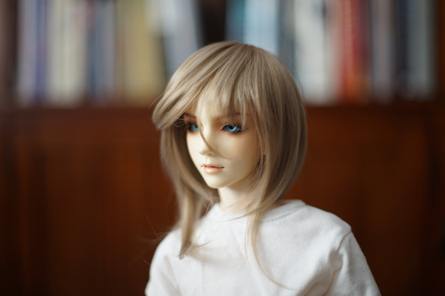
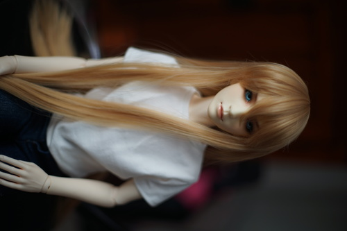

i recieved my wigs this morning! I spent $41 after taxes and shipping on all three of them and im pretty happy with what i got. i was going to take pictures of them all on my DD but i put the best one on her and didnt want to take it off so liam will be my model for the rest. i am also happy to say ALL of these wigs have light colored wig caps!
the first one, the shortest, appears to be Leeke LR-114_E in muddy brown. the bangs are cut weird on this one but heck it does look very classic BJD. im not sure if i want to trim or straighten it yet. it'll probably stay on liam since its much more fitting than the pink iple wig he had on.
the second appears to be Leeke's LR-001_E in goldenrod. the bangs done seem as straight cut as the stock photo so i could be wrong on this one. this wig is super long! theres a bit of damage to the fibers at the bottom but im honestly not to worried about it. this one definitely has the most flyaways out of the three and looks like it'll tangle if you touch it
and lastly, my favorite of the lot, nine9style's KNWL-930 in "Lemon Blond". this wig is so stinkin cute i cant stand it. i've never had a nine9 wig before but i'm thinking i need to check them out a bit more. i'm not sure if the seller was wrong about the color though because it is definitely a peachy light orange.
im not sure if hina will get this one or not. i cant wait to try them on her though! i have a bunch of long 8-9 wigs for her to try. i'm going to make a page covering all the wigs i've bought since it's so hard to find references and also info on wig cap colors.
i'm running out of space to put all these dangd wigs. i was keeping all my dd girl and mini clothes, shoes, wigs etc in 2 of those photo boxes and now i've overfilled them both. I need another one...